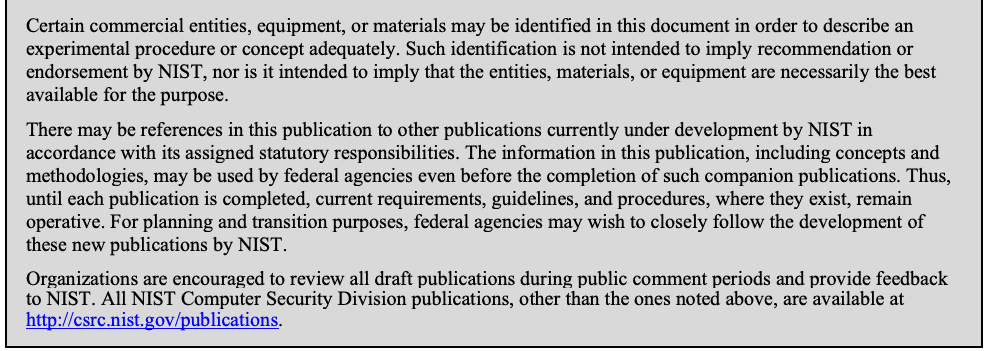

NIST IR 8319 日本語訳
英語タイトル : Review of the Advanced Encryption Standard日本語タイトル : 高度暗号化標準のレビュー
公開日 : 2021-07-23
原文URL : https://csrc.nist.gov/pubs/ir/8319/final
翻訳編集 : 自動生成（有志による非公式の日本語訳）, 原文取得日 : 2026-10-31, 訳文 : 166 / 166 ブロック
[要約] NIST IR 8319 は、Crypto Publication Review Board（委員会）によるレビュープロセスの最初の標準として、Advanced Encryption Standard（AES）を定義する Federal Information Processing Standard（FIPS）197 をレビューする報告書です。暗号技術の分野は非常に速い速度で進歩し続けており、暗号アルゴリズムのセキュリティ特性に影響を及ぼしうる新たな知見が得られていることから、レビュー対象の刊行物を特定するために委員会が設置されました。報告書は、標準のレビューの範囲の考え方を述べたうえで、セキュリティ要件、暗号解読、パラメータに関する考慮事項、実装に関する考慮事項、編集上のレビューの順に AES を検討しています。
NISTIR 8319
NISTIR 8319
Review of the Advanced Encryption Standard
高度暗号化標準のレビュー
Nicky Mouha
Nicky Mouha
This publication is available free of charge from:
この刊行物は次の場所から無償で入手できます。
https://doi.org/10.6028/NIST.IR.8319
https://doi.org/10.6028/NIST.IR.8319
NISTIR 8319
NISTIR 8319
Review of the Advanced Encryption Standard
高度暗号化標準のレビュー
Nicky Mouha Strativia Largo, MD
Nicky Mouha Strativia Largo, MD
This publication is available free of charge from:
この刊行物は次の場所から無償で入手できます。
https://doi.org/10.6028/NIST.IR.8319
https://doi.org/10.6028/NIST.IR.8319
July 2021
2021年7月
U.S. Department of Commerce Gina M. Raimondo, Secretary
米国商務省 Gina M. Raimondo 長官
National Institute of Standards and Technology
National Institute of Standards and Technology
James K. Olthoff, Performing the Non-Exclusive Functions and Duties of the Under Secretary of Commerce for Standards and Technology & Director, National Institute of Standards and Technology
James K. Olthoff、商務次官（標準・技術担当）兼国立標準技術研究所所長の非専属的な職務および任務を代行
National Institute of Standards and Technology Interagency or Internal Report 8319 21 pages (July 2021)
National Institute of Standards and Technology Interagency or Internal Report 8319 21 ページ（2021年7月）
This publication is available free of charge from: https://doi.org/10.6028/NIST.IR.8319
この刊行物は次の場所から無償で入手できます: https://doi.org/10.6028/NIST.IR.8319
Certain commercial entities, equipment, or materials may be identified in this document in order to describe an experimental procedure or concept adequately. Such identification is not intended to imply recommendation or endorsement by NIST, nor is it intended to imply that the entities, materials, or equipment are necessarily the best available for the purpose.
原本PDFの抜粋画像

実験の手順や概念を適切に説明するために、本書では特定の商業的な事業体、機器、または資材を挙げている場合があります。そうした記載は、NIST による推奨や支持を意味するものではなく、それらの事業体、資材、または機器が目的に照らして必ずしも最良であることを意味するものでもありません。
There may be references in this publication to other publications currently under development by NIST in accordance with its assigned statutory responsibilities. The information in this publication, including concepts and methodologies, may be used by federal agencies even before the completion of such companion publications. Thus, until each publication is completed, current requirements, guidelines, and procedures, where they exist, remain operative. For planning and transition purposes, federal agencies may wish to closely follow the development of these new publications by NIST.
本刊行物では、NIST が法令により課された責務に従って現在策定中の他の刊行物に言及している場合があります。本刊行物の情報は、概念や方法論を含め、そうした関連刊行物の完成前であっても連邦機関が利用してかまいません。したがって、各刊行物が完成するまでは、現行の要件、ガイドライン、および手順が存在する場合は、それらが引き続き有効です。計画および移行のため、連邦機関は、NIST によるこれらの新しい刊行物の策定状況を注意深く追うことを検討してもよいです。
Organizations are encouraged to review all draft publications during public comment periods and provide feedback to NIST. All NIST Computer Security Division publications, other than the ones noted above, are available at http://csrc.nist.gov/publications.
組織は、パブリックコメント期間中にすべてのドラフト刊行物を確認し、NIST にフィードバックを提供することが推奨されます。上記以外の NIST Computer Security Division の刊行物はすべて http://csrc.nist.gov/publications で入手できます。
Comments on this publication may be submitted to: National Institute of Standards and Technology Attn: Computer Security Division, Information Technology Laboratory 100 Bureau Drive (Mail Stop 8930) Gaithersburg, MD 20899-8930 Email: cryptopubreviewboard@nist.gov
本刊行物に対するコメントは次の宛先に提出できます: National Institute of Standards and Technology Attn: Computer Security Division, Information Technology Laboratory 100 Bureau Drive (Mail Stop 8930) Gaithersburg, MD 20899-8930 Email: cryptopubreviewboard@nist.gov
All comments are subject to release under the Freedom of Information Act (FOIA).
すべてのコメントは情報自由法（FOIA）に基づく公開の対象です。
Reports on Computer Systems Technology
コンピュータシステム技術に関する報告書
The Information Technology Laboratory (ITL) at the National Institute of Standards and Technology (NIST) promotes the U.S. economy and public welfare by providing technical leadership for the Nation’s measurement and standards infrastructure. ITL develops tests, test methods, reference data, proof of concept implementations, and technical analyses to advance the development and productive use of information technology. ITL’s responsibilities include the development of management, administrative, technical, and physical standards and guidelines for the cost-effective security and privacy of other than national security-related information in federal information systems.
米国国立標準技術研究所（NIST）の情報技術研究所（ITL）は、国の測定・標準インフラに対する技術的リーダーシップを提供することで、米国の経済と公共の福祉を促進しています。ITL は、情報技術の発展と生産的な利用を進めるため、テスト、テスト方法、参照データ、概念実証の実装、および技術分析を開発しています。ITL の責務には、連邦情報システムにおける国家安全保障関連以外の情報について、費用対効果の高いセキュリティとプライバシーを確保するための管理上、事務上、技術上、および物理上の標準とガイドラインの策定が含まれます。
Abstract
概要
The field of cryptography continues to advance at a very rapid pace, leading to new insights that may impact the security properties of cryptographic algorithms. The Crypto Publication Review Board ("the Board") has been established to identify publications to be reviewed. This report subjects the first standard to the review process: Federal Information Processing Standard (FIPS) 197, which defines the Advanced Encryption Standard (AES).
暗号技術の分野は非常に速い速度で進歩し続けており、暗号アルゴリズムのセキュリティ特性に影響を及ぼしうる新たな知見が得られています。レビュー対象の刊行物を特定するために、Crypto Publication Review Board（以下「委員会」）が設置されました。本報告書は、このレビュープロセスの最初の標準として、Advanced Encryption Standard（AES）を定義する Federal Information Processing Standard（FIPS）197 を対象とします。
Keywords
キーワード
AES; block cipher; cryptography; FIPS 197; review; Rijndael; standardization.
AES、ブロック暗号、暗号技術、FIPS 197、レビュー、Rijndael、標準化。
Acknowledgments
謝辞
The authors would like to thank Elaine Barker, Lily Chen, Quynh Dang, Morris Dworkin, Jim Foti, John Kelsey, Dustin Moody, Ray Perlner, Andrew Regenscheid, Meltem Sönmez Turan, and Isabel Van Wyk for providing valuable feedback during the development of this publication.
著者は、本刊行物の作成過程で貴重なフィードバックを寄せてくれた Elaine Barker、Lily Chen、Quynh Dang、Morris Dworkin、Jim Foti、John Kelsey、Dustin Moody、Ray Perlner、Andrew Regenscheid、Meltem Sönmez Turan、Isabel Van Wyk に感謝します。
Table of Contents
目次
1 Introduction
1 はじめに
The National Institute of Standards and Technology (NIST) develops standards and guidelines for cryptography. In NIST Internal Report (NISTIR) 7977 [42], the development process of these standards and guidelines is laid out. The Crypto Publication Review Board (“the Board”) has been established for the periodic review and maintenance of cryptographic standards and guidelines. The project page of the Board is available at: https://csrc.nist.gov/projects/crypto-publication-review-project.
米国国立標準技術研究所（NIST）は、暗号技術の標準とガイドラインを策定しています。NIST Internal Report（NISTIR）7977 [42] には、これらの標準とガイドラインの策定プロセスが示されています。暗号標準とガイドラインの定期的なレビューと保守のために、Crypto Publication Review Board（以下「委員会」）が設置されました。委員会のプロジェクトページは次の場所にあります: https://csrc.nist.gov/projects/crypto-publication-review-project。
The Advanced Encryption Standard (AES), standardized in FIPS 197 [40], is reviewed in this document. The AES standard is the result of an open competition organized by NIST, where the Rijndael submission by Daemen and Rijmen was selected by NIST as the winner of the competition in 2000 and subsequently standardized as AES in 2001. It is common to refer to both the standard and the algorithm as “AES,” and this document will do so as well when the intended meaning is clear from the context.
本書では、FIPS 197 [40] で標準化された Advanced Encryption Standard（AES）をレビューします。AES 標準は NIST が主催した公開コンペティションの成果であり、このコンペティションでは 2000 年に Daemen と Rijmen による Rijndael の提案が NIST によって優勝作に選ばれ、その後 2001 年に AES として標準化されました。標準とアルゴリズムの両方を「AES」と呼ぶのが一般的であり、本書でも、意図する意味が文脈から明らかな場合はそのように呼びます。
AES is a block cipher, which is an encryption algorithm that uses a secret key to transform a plaintext into a ciphertext of the same size (referred to as the block size). Currently, AES is one of only two block cipher standards that are approved by NIST. The other block cipher standard is the Triple Data Encryption Algorithm (TDEA) [4], commonly known as Triple-DES (Data Encryption Standard). TDEA is now deprecated and will be disallowed after 2023 [6].
AES はブロック暗号であり、共通鍵を用いて平文を同じサイズの暗号文に変換する暗号化アルゴリズムです（このサイズをブロックサイズと呼びます）。現在、AES は NIST が承認している 2 つのみのブロック暗号標準の 1 つです。もう 1 つのブロック暗号標準は Triple Data Encryption Algorithm（TDEA）[4] で、Triple-DES（Data Encryption Standard）として広く知られています。TDEA は現在非推奨であり、2023 年以降は使用が認められなくなります [6]。
Currently, virtually all modern 64-bit processors have native instructions for AES, which includes any recent 64-bit desktop or mobile device. A study by Leech et al. [32] estimated that the economic impact of the development of AES has totaled more than $250 billion over the past 20 years. The use of AES is ubiquitous, and the algorithm enjoys strong support in the cryptographic community.
現在、最近の 64 ビットのデスクトップやモバイル機器を含め、現代の 64 ビットプロセッサのほぼすべてが AES のネイティブ命令を備えています。Leech らによる研究 [32] では、AES の開発による経済的な効果は過去 20 年間で合計 2,500 億ドルを超えると見積もられました。AES の利用は遍在しており、このアルゴリズムは暗号コミュニティから強い支持を得ています。
Examples of protocols and applications that make use of AES are Transport Layer Security (TLS), which is used by virtually all web browsers; Secure Shell (SSH); Internet Protocol Security (IPsec); Wi-Fi; the fourth-generation (4G) Long-Term Evolution (LTE); the fifth-generation New Radio (5G NR); the Zigbee and Bluetooth standards for short-range communications; chip cards (both contact and contactless), including the Europay-MasterCard-Visa (EMV) credit and debit cards; and the Personal Identity Verification (PIV) used across the US Federal Government. For completeness, note that these examples may not use AES in every instance, and that AES may not be supported in older versions of these technologies.
AES を利用するプロトコルやアプリケーションの例としては、ほぼすべてのウェブブラウザが使用する Transport Layer Security（TLS）、Secure Shell（SSH）、Internet Protocol Security（IPsec）、Wi-Fi、第 4 世代（4G）の Long-Term Evolution（LTE）、第 5 世代の New Radio（5G NR）、近距離通信向けの Zigbee や Bluetooth の標準、Europay-MasterCard-Visa（EMV）のクレジットカードやデビットカードを含む（接触型・非接触型の両方の）チップカード、および米国連邦政府全体で使用される Personal Identity Verification（PIV）があります。念のため付記すると、これらの例が常に AES を使用するとは限らず、またこれらの技術の古いバージョンでは AES がサポートされていない場合があります。
There has been an extensive amount of scrutiny of AES so that the common understanding of the standard now is quite different from when it was first introduced. However, there has not yet been an effort by NIST to consolidate the knowledge gained about AES over the past two decades. This makes AES an ideal candidate to be selected by the Board for the first review.
AES は広範な精査を受けてきたため、この標準についての現在の共通理解は、導入当初とは大きく異なります。しかし、過去 20 年間に AES について得られた知見を NIST が統合する取り組みは、これまで行われていませんでした。このため、AES は委員会が最初のレビュー対象として選ぶのにふさわしい候補です。
This review presents an opportunity for retrospection on the development of the standard with an emphasis on new technical insights that are available at the time of the review. It is likely that these technical aspects are much better understood in the years after the finalization of the standard and, therefore, should be evaluated again during the review of the standard.
このレビューは、標準の策定を振り返る機会であり、レビュー時点で得られている新たな技術的知見に重点を置きます。これらの技術的な側面は、標準の確定から年月を経て、はるかによく理解されている可能性が高く、したがって標準のレビューにおいて再度評価すべきです。
The core of the review process will be a technical review. However, it is also important to evaluate the standard from an editorial point of view. More specifically, the review process will assess whether the standard is correct, complete, consistent, and unambiguous.
レビュープロセスの中心は技術的なレビューです。しかし、編集上の観点から標準を評価することも重要です。具体的には、標準が正確で、完全で、一貫しており、曖昧でないかどうかを評価します。
2 Scope
2 範囲
The review of the standard goes well beyond its text. The context in which it is used can be at least as relevant to identify weaknesses, vulnerabilities, or other deficiencies. Therefore, an important challenge will be to define the scope of the review. This can be understood as follows:
標準のレビューは、その文面をはるかに超えます。弱点、脆弱性、その他の欠陥を特定するうえでは、標準が使用される文脈も少なくとも同程度に関連しうるものです。したがって、重要な課題はレビューの範囲を定めることです。これは次のように理解できます。
•The scope needs to be broad enough to capture possible issues with the standard and its uses, identify the implicit and explicit assumptions that are made, and evaluate whether those assumptions are valid for the specific contexts in which the standard is used.
•範囲は、標準とその利用に関して起こりうる問題を捉え、暗黙および明示の前提を特定し、それらの前提が標準の使用される個別の文脈で妥当かどうかを評価できるよう、十分に広い必要があります。
•The scope needs to be narrow enough to provide concrete recommendations within a reasonable amount of time.
•範囲は、妥当な期間内に具体的な推奨事項を示せるよう、十分に狭い必要があります。
NIST maintains a variety of resources on cryptographic standards and guidelines and their applications. Examples of the layers of resources for applications of the AES block cipher are given in Table 1.
NIST は、暗号標準・ガイドラインとその応用に関するさまざまなリソースを維持しています。AES ブロック暗号の応用に関するリソースの階層の例を表 1 に示します。
Table 1: NIST-Maintained Resources for Cryptographic Standards and Guidelines
表 1: NIST が維持する暗号標準・ガイドラインのリソース
| Type of Resource | Example |
|---|---|
| Primitive | AES block cipher [40] |
| Higher-level operation | CMAC (cipher-based message authentication code) mode of operation [21], referencing AES |
| Scheme | Recommendation for Pair-Wise Key Establishment Using Integer Factorization Cryptography [3], referencing CMAC |
| Conformance testing (algorithm) | CMAC Validation System (CMACVS) [28] |
| Conformance testing (module) | CMVP (Cryptographic Module Validation Program) Approved Non-Invasive Attack Mitigation Test Metrics [48] |
| Configuration guidelines | Key length recommendations [6], Transport Layer Security (TLS) recommendations [37], referencing AES |
| Vulnerability database | NIST National Vulnerability Database (NVD) entry on CVE-2014-0160 (Heartbleed), an OpenSSL vulnerability that allows attackers to remotely compromise secret keys [44], such as the AES keys used to encrypt network traffic |
| リソースの種類 | 例 |
|---|---|
| プリミティブ | AES ブロック暗号 [40] |
| より高水準の操作 | AES を参照する CMAC（cipher-based message authentication code）動作モード [21] |
| 方式 | CMAC を参照する Recommendation for Pair-Wise Key Establishment Using Integer Factorization Cryptography [3] |
| 適合性テスト（アルゴリズム） | CMAC Validation System（CMACVS）[28] |
| 適合性テスト（モジュール） | CMVP（Cryptographic Module Validation Program）Approved Non-Invasive Attack Mitigation Test Metrics [48] |
| 構成ガイドライン | 鍵長に関する推奨事項 [6]、AES を参照する Transport Layer Security（TLS）に関する推奨事項 [37] |
| 脆弱性データベース | ネットワークトラフィックの暗号化に使われる AES 共通鍵などのシークレット鍵を攻撃者が遠隔から危殆化できる OpenSSL の脆弱性である CVE-2014-0160（Heartbleed）に関する NIST National Vulnerability Database（NVD）のエントリ [44] |
As Table 1 shows, the AES standard is mentioned in several NIST resources. It can be useful to better understand how these NIST resources are organized and how they impact the security properties of implementations of the AES algorithm. In addition to these NIST-maintained resources, there are academic publications and other publicly available resources that describe the security properties of applications of the AES algorithm.
表 1 が示すように、AES 標準は NIST の複数のリソースで言及されています。これらの NIST のリソースがどのように構成されているか、またそれらが AES アルゴリズムの実装のセキュリティ特性にどのように影響するかをよりよく理解することは有用です。NIST が維持するこれらのリソースに加えて、AES アルゴリズムの応用のセキュリティ特性を説明する学術論文やその他の公開リソースがあります。
However, only a limited number of attack types will impact the security properties of the AES algorithm itself, so these provide a starting point for the review.
しかし、AES アルゴリズム自体のセキュリティ特性に影響する攻撃の種類は限られているため、これらがレビューの出発点となります。
3 The Advanced Encryption Standard
3 Advanced Encryption Standard
The Advanced Encryption Standard (AES) algorithm [40] transforms an input (e.g., the plaintext) into an output (e.g., the ciphertext) of the same size (referred to as the block size). The transformation from plaintext to ciphertext is known as encryption and requires the use of a secret key. In the case of AES, the block size is 128 bits, and the secret key can be 128 bits, 192 bits, or 256 bits in length. The inverse transformation from ciphertext to plaintext, known as decryption, is defined as well.
Advanced Encryption Standard（AES）アルゴリズム [40] は、入力（例: 平文）を同じサイズの出力（例: 暗号文）に変換します（このサイズをブロックサイズと呼びます）。平文から暗号文への変換は暗号化として知られ、共通鍵の使用が必要です。AES では、ブロックサイズは 128 ビットで、共通鍵の長さは 128 ビット、192 ビット、または 256 ビットです。暗号文から平文への逆の変換は復号として知られ、これも定義されています。
The required security properties depend on the application, which is why this document will investigate the NIST standards and guidelines where AES is used and retrospectively examine the AES call for submissions [41] to see whether the properties that were required at the time of submission have been satisfied. To understand the relevance of these security properties, this document will describe whether failure of the security properties leads to attacks.
求められるセキュリティ特性は用途によって異なります。そのため本書では、AES が使われている NIST の標準とガイドラインを調べるとともに、AES の提案募集 [41] を振り返って検討し、提案当時に求められていた特性が満たされているかどうかを確認します。これらのセキュリティ特性の関連性を理解するため、本書では、セキュリティ特性が失われると攻撃につながるかどうかを説明します。
3.1 Security Requirements
3.1 セキュリティ要件
The AES call for submissions [41] stated that one of the factors on which algorithms would be judged is “the extent to which the algorithm output is indistinguishable from a random permutation on the input block.” This means that AES encryption must behave as a “pseudo-random permutation” (PRP). It is often implicit that the inverse operation (decryption) should be indistinguishable from random as well, but this requirement can be made explicit by using the term “strong PRP” or “super PRP.”
AES の提案募集 [41] は、アルゴリズムを評価する要素の 1 つとして「アルゴリズムの出力が、入力ブロックに対するランダムな置換と区別できない程度」を挙げていました。これは、AES の暗号化が「疑似ランダム置換」（PRP）として振る舞わなければならないことを意味します。逆の操作（復号）もランダムと区別できないものであるべきだと暗黙に考えられることが多いですが、この要件は「強 PRP」または「超 PRP」という用語を用いて明示できます。
Consider, for example, a challenge-response protocol where the challenge is the plaintext, and the response is the ciphertext of the AES operation.1 An attacker may generate a certain number of challenges (and observe the responses) while having access to the device. If the AES output is distinguishable from random, the attacker would be able to predict the response to a new challenge with a probability higher than \(2^{-128}\) (i.e., higher than the probability of guessing a randomly generated 128-bit ciphertext).
たとえば、チャレンジが平文で、レスポンスが AES 演算による暗号文であるチャレンジレスポンスプロトコルを考えます。1 攻撃者は、デバイスにアクセスできる状態で、一定数のチャレンジを生成し（そのレスポンスを観測し）ます。AES の出力がランダムと区別できる場合、攻撃者は新しいチャレンジに対するレスポンスを、\(2^{-128}\) より高い確率（つまり、ランダムに生成された 128 ビットの暗号文を推測する確率より高い確率）で予測できてしまいます。
Clearly, the indistinguishability property implies that it should not be possible for the attacker to recover the secret key, which would make it trivial to compute the response to any challenge. This requires an evaluation of whether the AES key lengths (i.e., 128, 192, and 256 bits) are sufficiently long to resist exhaustive key search in the foreseeable future, taking the advent of quantum computing into consideration.
明らかに、区別不能性という特性は、攻撃者が共通鍵を復元できないことを含意します。共通鍵を復元できれば、任意のチャレンジに対するレスポンスの計算は容易になってしまいます。このため、量子コンピューティングの登場を考慮に入れたうえで、AES の鍵長（すなわち 128、192、256 ビット）が、予見できる将来にわたって全数鍵探索に耐えるのに十分な長さであるかどうかの評価が必要です。
To quantify security in this setting, the number of input-output pairs available to the attacker and the success probability of the attack are relevant as well. Applications may implicitly or explicitly assume that the number of input-output pairs available to the attacker is limited. For example, in the challenge-response protocol mentioned earlier, a randomly generated input will repeat with some probability, and this probability should be sufficiently low for the given application. Note that, in this example, the number of input-output pairs that is available to the attacker can impact security, even if keys are sufficiently long.
この設定でセキュリティを定量化するには、攻撃者が利用できる入出力ペアの数と、攻撃の成功確率も関係します。アプリケーションは、攻撃者が利用できる入出力ペアの数が限られていることを、暗黙または明示的に前提としている場合があります。たとえば、先に挙げたチャレンジレスポンスプロトコルでは、ランダムに生成された入力があるとき一定の確率で繰り返されるため、この確率は対象のアプリケーションにとって十分に低くなければなりません。この例では、鍵が十分に長くても、攻撃者が利用できる入出力ペアの数がセキュリティに影響しうる点に注意してください。
Furthermore, it is important to try to evaluate the “security margin” of AES against various attacks. AES iterates a round function 10, 12, or 14 times, depending on the key size. The security margin indicates the number of “extra” rounds, i.e., the number of rounds beyond those needed to protect AES against the best-known attacks. As explained in [45], the security margin helps to assess the significance of attacks on reduced-round variants of a cryptographic algorithm. Indeed, it is standard practice in cryptanalysis to try to build upon reduced-round attacks. The security of an algorithm cannot be measured by a single figure, however, so the inherent problems in relying on a security margin should be taken into account [45].
さらに、さまざまな攻撃に対する AES の「セキュリティマージン」を評価しようとすることも重要です。AES は、鍵サイズに応じて、ラウンド関数を 10、12、または 14 回繰り返します。セキュリティマージンは「余分な」ラウンド数、つまり、既知の最良の攻撃から AES を守るために必要な数を超えるラウンド数を示します。[45] で説明されているように、セキュリティマージンは、暗号アルゴリズムのラウンド数を減らした変種に対する攻撃の重要性を評価するのに役立ちます。実際、暗号解読では、ラウンド数を減らした攻撃を足がかりにしようとするのが標準的な手法です。ただし、アルゴリズムのセキュリティを単一の数値で測ることはできないため、セキュリティマージンに依拠することに内在する問題を考慮に入れるべきです [45]。
Typically, the security margin is evaluated in the single-key setting, i.e., one secret key is drawn uniformly at random. Depending on the application, this may not be appropriate, and other attacks may need to be considered as well. For example, it may be relevant for the application to consider attacks where an attacker can query AES using multiple keys that either have some known relation (related-key attacks) or that are independently drawn at random (multi-key attacks). Multi-key attacks may drastically erode security claims, but a careful analysis is needed, as the mode of operation in which the AES block cipher is used may avoid multi-key degradation [36]; therefore, the impact of multi-key attacks will be discussed in the upcoming review of the NIST-recommended block cipher modes of operation in the 800-38 series of NIST Special Publications.
通常、セキュリティマージンは単一鍵の設定、すなわち 1 つの共通鍵が一様ランダムに選ばれる設定で評価されます。用途によっては、これが適切でない場合があり、ほかの攻撃も考慮する必要があるかもしれません。たとえば、攻撃者が、既知の関係を持つ複数の鍵（関連鍵攻撃）、または独立にランダムに選ばれた複数の鍵（マルチ鍵攻撃）を使って AES に問い合わせられる攻撃を考慮することが、そのアプリケーションに関係する場合があります。マルチ鍵攻撃はセキュリティ上の主張を大幅に損なう可能性がありますが、AES ブロック暗号が使われる動作モードによってはマルチ鍵による劣化を避けられる場合があるため [36]、慎重な分析が必要です。したがって、マルチ鍵攻撃の影響は、NIST Special Publications の 800-38 シリーズにある NIST 推奨のブロック暗号動作モードに関する今後のレビューで取り上げます。
More generally, the security properties of AES may differ from those of other block ciphers with the same key size and block size, and this may impact current or future applications. For such attacks, bridging the gap between theory and applications may help to decide on the next steps to be taken.
より一般的には、AES のセキュリティ特性は、同じ鍵サイズとブロックサイズを持つほかのブロック暗号のものとは異なる場合があり、現在または将来のアプリケーションに影響する可能性があります。このような攻撃については、理論と応用の隔たりを埋めることが、次にとるべき措置を決める助けとなる場合があります。
The security of applications not only depends on the theoretical security properties of the cryptographic algorithms but also on the ability to withstand attacks on their implementations. These attacks can either be invasive or non-invasive, depending on whether direct physical contact is required with components inside the device that performs the cryptographic operation.
アプリケーションのセキュリティは、暗号アルゴリズムの理論的なセキュリティ特性だけでなく、その実装への攻撃に耐える能力にも左右されます。これらの攻撃は、暗号演算を実行するデバイス内部の部品への直接の物理的接触を必要とするかどうかに応じて、侵襲的なものと非侵襲的なものに分けられます。
An attacker may gather key-dependent information through side channels, such as the time taken to perform a computation, or by injecting faults into the computation, such as by using a Rowhammer attack [29] to flip bits in memory without accessing them. When these attacks are performed non-invasively, they can be effective even when there are mechanisms to detect physical tampering of the device.
攻撃者は、計算にかかる時間などのサイドチャネルを通じて、または、Rowhammer 攻撃 [29] を用いてメモリにアクセスせずにビットを反転させるなど、計算にフォールトを注入することによって、鍵に依存する情報を収集する場合があります。これらの攻撃を非侵襲的に行う場合は、デバイスへの物理的な改ざんを検知する仕組みがあっても有効になりえます。
As the examples in this section show, security not only depends on the algorithmic description of the AES algorithm but also on the way the algorithm is implemented and on how its inputs (plaintexts/ciphertexts, and keys) are generated by the application. When a cryptographic application is vulnerable to a practical attack, this approach allows for the identification of the underlying cause and an evaluation of the vulnerability’s impact.
本節の例が示すように、セキュリティは、AES アルゴリズムの仕様上の記述だけでなく、アルゴリズムの実装方法と、アプリケーションがその入力（平文・暗号文および鍵）をどのように生成するかにも左右されます。暗号アプリケーションが実用的な攻撃に対して脆弱である場合、このアプローチにより、根本原因の特定と脆弱性の影響の評価が可能になります。
Table 2: A Selection of Cryptanalysis Results For AES2
表 2: AES に対する暗号解読結果の抜粋2
| Key Size | Rounds | Time | Data | Memory | Type | Reference |
|---|---|---|---|---|---|---|
| Any | 5 | \(2^{31}\) | \(2^{11.3}\) | negligible | yoyo | [47] |
| 5 | \(2^{21.5}\) | \(2^{21.5}\) | \(2^{21.5}\) | partial key recovery | [7] | |
| 12 | \(2^{66}\) | n/a | \(2^{64}\) | known key | [24] | |
| 128 bits | 7/10 | \(2^{99}\) | \(2^{97}\) | \(2^{98}\) | MitM | [20] |
| 10/10 | \(2^{126.16}\) | \(2^{88}\) | \(2^{8}\) | biclique | [16] | |
| 10/10 | \(2^{126.59}\) | 2 | \(2^{60}\) | biclique | [15] | |
| 10/10 | \(2^{125.87}\) | \(2^{72}\) | \(2^{60}\) | biclique | [49] | |
| 192 bits | 8/12 | \(2^{172}\) | \(2^{107}\) | \(2^{96}\) | MitM | [20] |
| 9/12 | \(2^{182.5}\) | \(2^{117}\) | \(2^{165.5}\) | MitM | [34] | |
| 12/12 | \(2^{176}\) | \(2^{123}\) | \(2^{152}\) | related key | [13] | |
| 12/12 | \(2^{190.16}\) | \(2^{80}\) | \(2^{8}\) | biclique | [16] | |
| 12/12 | \(2^{190.83}\) | 2 | \(2^{60}\) | biclique | [15] | |
| 12/12 | \(2^{189.76}\) | \(2^{48}\) | \(2^{60}\) | biclique | [49] | |
| 256 bits | 9/14 | \(2^{203}\) | \(2^{120}\) | \(2^{203}\) | MitM | [20] |
| 10/14 | \(2^{253}\) | \(2^{111}\) | \(2^{211.2}\) | MitM | [35] | |
| 10/14 | \(2^{45}\) | \(2^{44}\) | \(2^{33}\) | related key | [12] | |
| 14/14 | \(2^{131}\) | \(2^{131}\) | \(2^{65}\) | related key | [14] | |
| 14/14 | \(2^{99.5}\) | \(2^{99.5}\) | \(2^{77}\) | related key | [13] | |
| 14/14 | \(2^{254.42}\) | \(2^{40}\) | \(2^{8}\) | biclique | [16] | |
| 14/14 | \(2^{254.94}\) | 3 | \(2^{60}\) | biclique | [15] | |
| 14/14 | \(2^{254.18}\) | \(2^{40}\) | \(2^{60}\) | biclique | [49] |
| 鍵サイズ | ラウンド数 | 時間 | データ | メモリ | 種類 | 参照 |
|---|---|---|---|---|---|---|
| すべて | 5 | \(2^{31}\) | \(2^{11.3}\) | 無視できる程度 | yoyo | [47] |
| 5 | \(2^{21.5}\) | \(2^{21.5}\) | \(2^{21.5}\) | 部分的な鍵回復 | [7] | |
| 12 | \(2^{66}\) | n/a | \(2^{64}\) | 既知鍵 | [24] | |
| 128 ビット | 7/10 | \(2^{99}\) | \(2^{97}\) | \(2^{98}\) | MitM | [20] |
| 10/10 | \(2^{126.16}\) | \(2^{88}\) | \(2^{8}\) | biclique | [16] | |
| 10/10 | \(2^{126.59}\) | 2 | \(2^{60}\) | biclique | [15] | |
| 10/10 | \(2^{125.87}\) | \(2^{72}\) | \(2^{60}\) | biclique | [49] | |
| 192 ビット | 8/12 | \(2^{172}\) | \(2^{107}\) | \(2^{96}\) | MitM | [20] |
| 9/12 | \(2^{182.5}\) | \(2^{117}\) | \(2^{165.5}\) | MitM | [34] | |
| 12/12 | \(2^{176}\) | \(2^{123}\) | \(2^{152}\) | 関連鍵 | [13] | |
| 12/12 | \(2^{190.16}\) | \(2^{80}\) | \(2^{8}\) | biclique | [16] | |
| 12/12 | \(2^{190.83}\) | 2 | \(2^{60}\) | biclique | [15] | |
| 12/12 | \(2^{189.76}\) | \(2^{48}\) | \(2^{60}\) | biclique | [49] | |
| 256 ビット | 9/14 | \(2^{203}\) | \(2^{120}\) | \(2^{203}\) | MitM | [20] |
| 10/14 | \(2^{253}\) | \(2^{111}\) | \(2^{211.2}\) | MitM | [35] | |
| 10/14 | \(2^{45}\) | \(2^{44}\) | \(2^{33}\) | 関連鍵 | [12] | |
| 14/14 | \(2^{131}\) | \(2^{131}\) | \(2^{65}\) | 関連鍵 | [14] | |
| 14/14 | \(2^{99.5}\) | \(2^{99.5}\) | \(2^{77}\) | 関連鍵 | [13] | |
| 14/14 | \(2^{254.42}\) | \(2^{40}\) | \(2^{8}\) | biclique | [16] | |
| 14/14 | \(2^{254.94}\) | 3 | \(2^{60}\) | biclique | [15] | |
| 14/14 | \(2^{254.18}\) | \(2^{40}\) | \(2^{60}\) | biclique | [49] |
3.2 Cryptanalysis
3.2 暗号解読
A significant number of academic papers have provided analysis of the security of the AES algorithm against cryptographic attacks. These papers typically express the attack complexity in terms of time, data, and memory. Usually, the unit of time is the wall-clock time of a single AES encryption on a classical (i.e., “non-quantum”) computer; the unit of data is a single plaintext-ciphertext pair (encrypted under a secret key) that is obtained by the attacker; and the unit of memory is the size of an AES ciphertext (i.e., a 128-bit block).
多数の学術論文が、暗号攻撃に対する AES アルゴリズムのセキュリティを分析しています。これらの論文は通常、攻撃の計算量を時間、データ、メモリで表します。通常、時間の単位は古典的な（すなわち「非量子」の）コンピュータでの AES 暗号化 1 回の実時間、データの単位は攻撃者が入手する（共通鍵で暗号化された）平文と暗号文のペア 1 組、メモリの単位は AES 暗号文のサイズ（すなわち 128 ビットのブロック）です。
A comprehensive study of cryptanalysis attack papers that were published in cryptographic literature was performed. Table 2 contains a list of significant results under various attack scenarios. This list is based on attack papers and citations in other papers as well as recent papers by Aumasson [1] and Naito et al. [39] that summarize attacks on AES. Focus was placed on identifying what can be considered the most significant attacks rather than compiling an exhaustive list. The attacks are not necessarily comparable; the metrics of the attacks may be computed in different ways, and the attacks may not all have the same success probability. Nevertheless, they give an indication of the current state of the art in AES cryptanalysis.
暗号関連の文献で発表された暗号解読攻撃の論文について、包括的な調査を行いました。表 2 には、さまざまな攻撃シナリオにおける重要な結果の一覧を掲載しています。この一覧は、攻撃論文と他の論文での引用、および AES への攻撃をまとめた Aumasson [1] と Naito ら [39] の最近の論文に基づいています。網羅的な一覧を作成することよりも、最も重要と考えられる攻撃を特定することに重点を置きました。これらの攻撃は必ずしも比較可能ではありません。攻撃の指標は異なる方法で計算されている場合があり、すべての攻撃が同じ成功確率を持つとは限りません。それでも、これらは AES の暗号解読の現状の水準を示しています。
In Table 2, results that apply for all variants of AES are provided, followed by results that are specific to the variants with 128-bit, 192-bit, and 256-bit key sizes. As this table shows, biclique attacks and attacks outside the single-key setting (e.g., weak-key, known-key, chosen-key, and related-key attacks) exist for the full-round AES. These results are considered cryptographic weaknesses in the sense that they do not apply to all block ciphers with the same key size and block size. The time complexity of the attacks is below exhaustive key search for the given key size.
表 2 では、AES のすべての変種に当てはまる結果を示したうえで、鍵サイズが 128 ビット、192 ビット、256 ビットの変種に固有の結果を示しています。この表が示すように、フルラウンドの AES に対しても、biclique 攻撃や、単一鍵の設定以外の攻撃（たとえば弱鍵攻撃、既知鍵攻撃、選択鍵攻撃、関連鍵攻撃）が存在します。これらの結果は、同じ鍵サイズとブロックサイズを持つすべてのブロック暗号に当てはまるわけではないという意味で、暗号上の弱点と見なされます。これらの攻撃の時間計算量は、その鍵サイズでの全数鍵探索を下回っています。
Biclique attacks perform an exhaustive search over a reduced number of rounds of the cipher and can, therefore, only outperform exhaustive search over all rounds by a small constant factor. It is well known that slight improvements over exhaustive search are always possible (e.g., the “distributive technique” and “early abort technique” [11]); however, biclique attacks provide further speedups that do not apply to every block cipher.
biclique 攻撃は、暗号のラウンド数を減らしたものに対して全数探索を行うため、全ラウンドに対する全数探索を上回る効果は、小さな定数倍にとどまります。全数探索をわずかに上回る改善が常に可能であること（たとえば「分配手法」や「早期打ち切り手法」[11]）はよく知られていますが、biclique 攻撃はさらなる高速化をもたらし、これはすべてのブロック暗号に当てはまるわけではありません。
In NIST SP 800-57 Part 1, Revision 5 [2], “security strength” is defined in terms of the number of “operations” to break a cryptographic algorithm. If “operations” can be elementary operations rather than “full-round encryptions,” then biclique attacks do not affect the security strength of a cipher, as biclique attacks still perform exhaustive search over a reduced number of rounds.
NIST SP 800-57 Part 1, Revision 5 [2] では、「セキュリティ強度」が、暗号アルゴリズムを破るための「演算」の数で定義されています。「演算」が「フルラウンドの暗号化」ではなく基本演算でもよいとすれば、biclique 攻撃はラウンド数を減らしたものに対して依然として全数探索を行うため、暗号のセキュリティ強度には影響しません。
In a related-key attack, the attacker obtains ciphertexts that are encrypted under multiple keys that are not known to the attacker; however, the attacker can know (or even choose) a mathematical relationship between the keys. Some caution is necessary to avoid related-key attacks that trivially apply to every block cipher; for details, refer to Bellare and Kohno [8] and Mouha and Luykx [38]. For example, the complementation property of DES and Triple-DES [4] enables a straightforward related-key attack: if all of the bits of the plaintext and key are flipped, the ciphertext bits will be flipped with probability 1 instead of probability \(2^{-64}\) for a randomly generated 64-bit ciphertext. In this example, a plaintext-ciphertext pair produced using a secret key allows an attacker to decrypt a ciphertext under a related key. Related-key attacks can be prevented by always generating keys uniformly at random or by imposing additional restrictions when keys are generated with some known relations (e.g., according to a key generation method specified in NIST SP 800-133, Revision 2 [5]).
関連鍵攻撃では、攻撃者は、攻撃者に知られていない複数の鍵で暗号化された暗号文を入手しますが、それらの鍵の間の数学的な関係は攻撃者が知っている（あるいは選択すらできる）場合があります。すべてのブロック暗号に自明に当てはまる関連鍵攻撃を避けるため、ある程度の注意が必要です。詳細は Bellare と Kohno [8] および Mouha と Luykx [38] を参照してください。たとえば、DES と Triple-DES [4] の補数性により、単純な関連鍵攻撃が可能になります。平文と鍵のすべてのビットを反転すると、ランダムに生成された 64 ビットの暗号文であれば確率 \(2^{-64}\) となるところ、暗号文のビットが確率 1 で反転します。この例では、共通鍵を使って生成された平文と暗号文のペアにより、攻撃者は関連鍵で暗号化された暗号文を復号できます。関連鍵攻撃は、鍵を常に一様ランダムに生成するか、既知の関係を持つ鍵を生成する場合に追加の制限を課すこと（たとえば NIST SP 800-133, Revision 2 [5] に規定された鍵生成方法に従うこと）で防止できます。
Meet-in-the-middle attacks proceed by 1) describing the algorithm as a system of mathematical equations and 2) separating the equations into two or more groups such that they can be solved more efficiently than by exhaustive key search. In terms of the number of rounds attacked, meet-in-the-middle attacks seem to outperform all other attacks on AES in the single-key setting, except for biclique attacks. Meet-in-the-middle attacks indicate that AES currently has a security margin of three or four rounds, depending on the key size.
meet-in-the-middle 攻撃は、1) アルゴリズムを数学的な方程式系として記述し、2) その方程式を、全数鍵探索よりも効率的に解けるように 2 つ以上のグループに分離することで進めます。攻撃対象のラウンド数で見ると、単一鍵の設定では、biclique 攻撃を除き、meet-in-the-middle 攻撃が AES に対する他のすべての攻撃を上回っているようです。meet-in-the-middle 攻撃は、AES に現在、鍵サイズに応じて 3 または 4 ラウンドのセキュリティマージンがあることを示しています。
There does not seem to be a consensus in the cryptographic community about what constitutes an acceptable security margin, although a margin of only one round can be considered to be risky. Even if future attacks erode the security margin of AES by an additional round, there would still be a security margin of two or three rounds left, which may be sufficient for the foreseeable future. It seems that the number of rounds for AES was well chosen when it was initially designed and is still widely considered to be more than sufficient by the cryptographic community; a recent paper by Aumasson [1] even suggests reducing the number of rounds.
許容できるセキュリティマージンがどの程度かについて、暗号コミュニティに合意はないようですが、1 ラウンドしかないマージンは危険と見なせます。将来の攻撃によって AES のセキュリティマージンがさらに 1 ラウンド削られたとしても、2 または 3 ラウンドのマージンが残るため、予見できる将来にはそれで十分な場合があります。AES のラウンド数は、当初の設計時に適切に選ばれており、暗号コミュニティでは今なお十分すぎるほどと広く考えられているようです。Aumasson [1] の最近の論文は、ラウンド数を減らすことさえ提案しています。
When Rijndael was selected as the winner of the AES competition, it was stated in [45] that “for 128-bit keys, 6 or 7 out of the 10 rounds of Rijndael have been attacked, the attack on 7 rounds requiring nearly the entire codebook.” This statement still holds today in the single-key setting if biclique attacks are excluded: as shown in Table 2, meet-in-the middle attacks reach 7 out of 10 rounds for 128-bit AES with a very high data complexity of \(2^{97}\) plaintext-ciphertext pairs. Therefore, in spite of two decades of public cryptanalysis, the AES algorithm has not been found to be significantly weaker than expected during the standardization process.
Rijndael が AES コンペティションの優勝作に選ばれた際、[45] には「128 ビット鍵については、Rijndael の 10 ラウンドのうち 6 または 7 ラウンドが攻撃されており、7 ラウンドへの攻撃にはコードブック全体に近い量が必要である」と記されていました。この記述は、biclique 攻撃を除外すれば、単一鍵の設定では今日でも成り立ちます。表 2 に示すとおり、meet-in-the-middle 攻撃は 128 ビット AES の 10 ラウンド中 7 ラウンドに達しますが、データ計算量は \(2^{97}\) 組の平文と暗号文のペアと非常に高くなります。したがって、20 年にわたる公開の暗号解読にもかかわらず、AES アルゴリズムは、標準化の過程で想定されていたよりも著しく弱いとは判明していません。
Whereas attacking the maximum number of rounds gives an indication of the security margin, there is insight to be gained from focusing on other metrics. These include finding the best attacks for a small number of rounds; attacks with specific bounds on the time, data, or memory requirements; and strong attack settings, such as known-key and chosen-key attacks. The motivation to explore strong attack settings is similar to reduced-round attacks: they give a more fundamental understanding of the security of the AES algorithm and can provide important starting points in the development of other attacks. It is interesting to note that new properties of AES are still being discovered; for example, the new representations of the AES key schedule by Leurent and Pernot [33] had not been described after about 20 years of analysis.
最大のラウンド数を攻撃することはセキュリティマージンの目安になりますが、ほかの指標に注目することで得られる洞察もあります。これには、少ないラウンド数に対する最良の攻撃の発見、時間・データ・メモリの要件に特定の上限を置いた攻撃、および既知鍵攻撃や選択鍵攻撃のような強力な攻撃設定が含まれます。強力な攻撃設定を探究する動機は、ラウンド数を減らした攻撃と似ています。それらは AES アルゴリズムのセキュリティについてのより根本的な理解をもたらし、ほかの攻撃を開発する際の重要な出発点となりえます。AES の新たな特性が今なお発見されていることは興味深い点です。たとえば、Leurent と Pernot [33] による AES 鍵スケジュールの新しい表現は、約 20 年にわたる分析を経ても記述されていませんでした。
3.3 Parameter Considerations
3.3 パラメータに関する考慮事項
In the security analysis in the previous section, only cryptanalysis results that outperform generic attacks in terms of their time complexity were considered. Generic attacks are attacks that apply to any block cipher with a given block size and key size.
前節のセキュリティ分析では、時間計算量の点で汎用的な攻撃を上回る暗号解読の結果のみを考慮しました。汎用的な攻撃とは、特定のブロックサイズと鍵サイズを持つあらゆるブロック暗号に当てはまる攻撃です。
Determining whether the 128-bit, 192-bit, and 256-bit key sizes of AES provide a sufficient level of security depends on the amount of computing power that will be available at some point in the future. This requires extrapolating the current rate of progress in computing power, which involves uncertainty and risk of error.
AES の 128 ビット、192 ビット、256 ビットの鍵サイズが十分なレベルのセキュリティを提供するかどうかの判断は、将来のある時点で利用できる計算能力の量に左右されます。そのためには、計算能力の現在の進歩の速度を外挿する必要があり、そこには不確実性と誤りのリスクが伴います。
Moore’s law estimates that the number of transistors on a chip, which roughly corresponds to its computing power, will double every 18 months.3 This means that in three years, computing power will quadruple, resulting in a loss of two bits of security. If an attacker needs to make a one-time purchase of computing hardware to perform a computation in a timeframe of five years, Moore’s law implies that the attacker should wait for three years until the computing power has quadrupled rather than mounting an attack today. Indeed, five years of computation at the current rate is less than two years at a quadrupled rate.
ムーアの法則は、チップ上のトランジスタ数が 18 か月ごとに倍増すると見積もっています。これはおおむねその計算能力に対応します。3 つまり、3 年で計算能力は 4 倍になり、セキュリティは 2 ビット失われます。攻撃者が 5 年の期間で計算を行うために計算ハードウェアを一度だけ購入する必要がある場合、ムーアの法則に従えば、攻撃者は今日攻撃を仕掛けるよりも、計算能力が 4 倍になるまで 3 年待つほうがよいことになります。実際、現在の速度での 5 年分の計算は、4 倍の速度では 2 年足らずで済みます。
The advent of quantum computing introduces further uncertainty about the amount of computing power that will be available in the future. Due to Grover’s algorithm, the number of computations required to perform an exhaustive key search using a quantum computer is roughly the square root of the number of computations required using a classical computer, which corresponds to reducing the security strength by half. In contrast, an attack on the full AES, which would be a cryptanalytical breakthrough, may also reduce the security strength. It is worth noting that multi-key attacks may also reduce the security strength. For an extensive discussion about measuring quantum security, see Section 4.A.5 of the “Call for Proposals” of the NIST Post-Quantum Cryptography project [43].
量子コンピューティングの登場は、将来利用できる計算能力の量について、さらなる不確実性をもたらします。Grover のアルゴリズムにより、量子コンピュータで全数鍵探索を行うために必要な計算の回数は、古典的なコンピュータで必要な計算の回数のおおよそ平方根となり、これはセキュリティ強度を半分にすることに相当します。対照的に、完全版の AES に対する攻撃は、暗号解読上のブレークスルーとなりますが、これもセキュリティ強度を低下させる可能性があります。マルチ鍵攻撃もセキュリティ強度を低下させる可能性がある点には注意が必要です。量子セキュリティの測定に関する詳細な議論については、NIST Post-Quantum Cryptography プロジェクトの「Call for Proposals」[43] の Section 4.A.5 を参照してください。
Parnas’s seminal paper on decomposing systems into modules [46] proposes that “one begins with a list of difficult design decisions or design decisions which are likely to change.” Modularization plays a central role in software engineering, and it is a principle that can be recognized in NIST's standards and guidelines for cryptography. NIST has reflected this by moving the guidance related to key sizes to SP 800-131A, Revision 2 [6], which specifies the currently acceptable key lengths to be used for AES and other NIST standards.
システムをモジュールに分解することに関する Parnas の先駆的な論文 [46] は、「困難な設計判断、または変更される可能性の高い設計判断の一覧から始める」ことを提案しています。モジュール化はソフトウェア工学で中心的な役割を果たしており、NIST の暗号標準とガイドラインにも認められる原則です。NIST は、鍵サイズに関するガイダンスを SP 800-131A, Revision 2 [6] に移すことでこれを反映しました。同文書は、AES やその他の NIST 標準で使用する、現在許容される鍵長を規定しています。
FIPS 197 provides three variants of AES, each with a different key size: 128, 192, and 256 bits. The 192-bit and 256-bit variants not only have larger key sizes but also require additional iterations of the AES round function — 12 and 14 rounds, respectively — compared to 10 rounds for the 128-bit variant. It is reasonable to expect that the 192-bit and 256-bit variants will always require significantly more computations to attack than the 128-bit variant and may, therefore, provide alternatives in case of significant advances in computing power or cryptanalysis. Currently, however, all three keys sizes are considered secure, and it seems that this will continue to be the case for the foreseeable future.
FIPS 197 は、鍵サイズがそれぞれ異なる 128、192、256 ビットの 3 つの AES 変種を提供しています。192 ビットと 256 ビットの変種は、鍵サイズが大きいだけでなく、128 ビットの変種の 10 ラウンドに比べ、AES のラウンド関数の反復がそれぞれ 12 回と 14 回と、追加で必要です。192 ビットと 256 ビットの変種は、攻撃にあたって 128 ビットの変種より常に大幅に多くの計算を要し、したがって計算能力や暗号解読の大幅な進歩があった場合の代替手段になりうると期待するのは妥当です。ただし現時点では、3 つの鍵サイズはいずれも安全と見なされており、予見できる将来にわたってこの状況が続くようです。
For all AES variants, the block size is 128 bits. Inputs larger than 128 bits need to be processed using a mode of operation, and the security of the mode of operation is impacted by the block size of the underlying block cipher. The Sweet32 attack [10] shows the practical insecurity of block ciphers with a 64-bit block size and was the basis for the decision to deprecate Triple-DES [4] and disallow it after 2023 [6]. The impact of the 128-bit block size of AES will be analyzed in the upcoming review of the NIST-recommended block cipher modes of operation.
すべての AES 変種で、ブロックサイズは 128 ビットです。128 ビットより大きい入力は動作モードを用いて処理する必要があり、動作モードのセキュリティは、基礎となるブロック暗号のブロックサイズの影響を受けます。Sweet32 攻撃 [10] は、ブロックサイズが 64 ビットのブロック暗号の実用上の安全性の欠如を示し、Triple-DES [4] を非推奨とし、2023 年以降は使用を認めないとする決定 [6] の根拠となりました。AES の 128 ビットのブロックサイズの影響は、NIST 推奨のブロック暗号動作モードに関する今後のレビューで分析します。
3.4 Implementation Considerations
3.4 実装に関する考慮事項
Depending on the attack setting, there are a wide range of possible implementation attacks. For example, the attack setting could be a desktop or mobile device for which the attacker has full access to the software implementation of AES and the platform on which it is executed [51]. Security in this attack setting is very difficult to achieve, as it is unclear whether there exist software obfuscation techniques that can remain secure for an extended period of time (e.g., to prevent an adversary from extracting the secret key).
攻撃の設定によって、実装への攻撃には幅広い可能性があります。たとえば、攻撃の設定として、攻撃者が AES のソフトウェア実装と、それが実行されるプラットフォームに完全にアクセスできるデスクトップやモバイル機器が考えられます [51]。ソフトウェアの難読化技術のうち、長期間（たとえば敵対者による共通鍵の抽出を防ぐために）安全でいられるものが存在するかどうかが不明であるため、この攻撃設定でセキュリティを達成するのは非常に困難です。
The strongest attack setting considered in this document is one in which the AES computation is performed on a device (e.g., a chip card) that may be in the hands of the attacker, but the device can have certain tamper-detection and prevention mechanisms, so the attacker does not have full control of the platform.
本書で考慮する最も強力な攻撃設定は、AES の計算が、攻撃者の手中にある可能性のあるデバイス（たとえばチップカード）上で行われるものですが、そのデバイスは一定の改ざん検知・防止の仕組みを備えうるため、攻撃者はプラットフォームを完全には制御できません。
Ideally, the calculation of the ciphertext (based on the key and plaintext) is done correctly and without revealing any additional information. In the physical world, however, implementations may inadvertently leak information through side channels or through the injection of faults into the computation.
理想的には、（鍵と平文に基づく）暗号文の計算は、正しく、追加の情報を明かすことなく行われます。しかし、物理的な世界では、実装がサイドチャネルや、計算へのフォールトの注入を通じて、意図せず情報を漏えいする場合があります。
For example, computations cannot be performed instantaneously but require a certain amount of time. If the execution time depends on the value of the secret key, the implementation may be vulnerable to a timing attack [30]. Timing attacks do not require physical access to the device and may even be performed remotely over the Internet [17]. In addition to execution time, other side channels include power consumption [31] or electromagnetic radiation emanating from the device [22].
たとえば、計算は瞬時には実行できず、一定の時間を要します。実行時間が共通鍵の値に依存する場合、その実装はタイミング攻撃 [30] に対して脆弱になりえます。タイミング攻撃はデバイスへの物理的なアクセスを必要とせず、インターネット経由で遠隔から行われることさえあります [17]。実行時間のほかにも、サイドチャネルには、消費電力 [31] や、デバイスから放射される電磁波 [22] があります。
When side-channel attacks are performed non-invasively (i.e., without direct physical contact with components within the device), they may evade physical tamper-detection mechanisms. The same applies to fault-injection attacks, such as the Rowhammer attack [29] mentioned earlier. Other fault-injection attacks, such as laser fault injection, may require a partial decapsulation of the integrated circuit (IC) package, which may potentially be detected by tamper-detection mechanisms.
サイドチャネル攻撃が非侵襲的に（すなわちデバイス内部の部品に直接物理的に接触することなく）行われる場合、物理的な改ざん検知の仕組みを回避する可能性があります。先に挙げた Rowhammer 攻撃 [29] のようなフォールト注入攻撃も同様です。レーザーフォールト注入のようなほかのフォールト注入攻撃では、集積回路（IC）パッケージの部分的な開封が必要となる場合があり、これは改ざん検知の仕組みによって検知される可能性があります。
Side-channel attacks were known during the AES standardization process and even explicitly considered as evaluation criteria [45]. It was thought that table lookup operations were not vulnerable to timing attacks, but this statement may not apply to software platforms that use a cache to accelerate the access of data from main memory [9]. It cannot be overstated how devastating side-channel attacks can be on implementations of the AES algorithm compared to cryptanalytic attacks. Attacking AES in the single-key setting requires the equivalent of an exhaustive key search (approximately \(2^{128}\) AES evaluations for the 128-bit key size), which is considered to be infeasible for the foreseeable future. However, a cache-timing attack can recover the secret key of a vulnerable AES implementation in just a matter of minutes [9], making this attack a serious concern if such a side channel is available to the attacker.
サイドチャネル攻撃は AES の標準化プロセスの時点で知られており、評価基準として明示的に考慮されてさえいました [45]。テーブル参照演算はタイミング攻撃に対して脆弱ではないと考えられていましたが、この記述は、メインメモリからのデータアクセスを高速化するためにキャッシュを使うソフトウェアプラットフォームには当てはまらない可能性があります [9]。暗号解読攻撃と比べ、サイドチャネル攻撃が AES アルゴリズムの実装にとってどれほど壊滅的になりうるかは、いくら強調してもしすぎることはありません。単一鍵の設定で AES を攻撃するには、全数鍵探索に相当する量（128 ビットの鍵サイズで約 \(2^{128}\) 回の AES 評価）が必要であり、これは予見できる将来には実行不可能と考えられています。しかし、キャッシュタイミング攻撃は、脆弱な AES 実装の共通鍵をわずか数分で復元できるため [9]、そのようなサイドチャネルを攻撃者が利用できる場合、この攻撃は深刻な懸念事項となります。
It is a nontrivial task to secure an AES implementation against side-channel attacks without sacrificing too much in terms of efficiency. Some notable implementations of AES that are secure against timing attacks are those of Käsper and Schwabe [27] as well as Hamburg [26]. When Intel introduced new instructions for AES, a key motivation was the elimination of timing attacks [25]. Regarding differential-power-analysis (DPA) attacks, the DPA contest [50] is mentioned, in which several DPA-protected implementations of AES were proposed and subjected to public evaluation.
効率をあまり犠牲にせずに AES の実装をサイドチャネル攻撃から保護するのは、容易ではない作業です。タイミング攻撃に対して安全な AES の注目すべき実装としては、Käsper と Schwabe [27]、および Hamburg [26] のものがあります。Intel が AES の新しい命令を導入した際の主な動機は、タイミング攻撃の排除でした [25]。差分電力解析（DPA）攻撃については、AES の DPA 対策済みの実装が複数提案され、公開の評価に付された DPA contest [50] が挙げられます。
Protection against non-invasive attacks is considered in NIST SP 800-140F [48]. However, SP 800-140F does not yet contain test metrics to protect against non-invasive attacks.
非侵襲的な攻撃に対する保護は、NIST SP 800-140F [48] で検討されています。しかし、SP 800-140F には、非侵襲的な攻撃に対する保護のためのテスト指標がまだ含まれていません。
3.5 Editorial Review
3.5 編集上のレビュー
FIPS 197 is a highly detailed document that explains the AES algorithm in a clear and unambiguous way, with many additional clarifications to help understand the concepts, including examples, pseudocode, and figures.
FIPS 197 は、AES アルゴリズムを明確かつ曖昧さなく説明する非常に詳細な文書であり、例、擬似コード、図など、概念の理解を助ける追加の説明が多数あります。
Overall, the editorial quality of the document is very high. Nevertheless, there are some potential areas for improvement.
全体として、この文書の編集上の品質は非常に高いです。それでも、改善の余地がありうる点がいくつかあります。
The document does not assume that the reader is familiar with polynomial rings and finite fields and, therefore, explains how the addition and multiplication operations are performed through examples. However, the notation \(\mathrm{GF}(2^8)\) is used but not explained in FIPS 197. A finite field is also known as a Galois Field (GF), and \(\mathrm{GF}(2^8)\) refers to a finite field of 256 elements.
この文書は、読者が多項式環や有限体に精通していることを前提としていないため、加算と乗算の演算がどのように行われるかを例を通じて説明しています。しかし、表記 \(\mathrm{GF}(2^8)\) は FIPS 197 で使われているものの、説明されていません。有限体は Galois Field（GF）とも呼ばれ、\(\mathrm{GF}(2^8)\) は 256 個の元からなる有限体を指します。
FIPS 197 also introduces more mathematical notation than is strictly necessary to understand the mathematical operations. For example, it explains how the ShiftRows() and MixColumns() operations can be defined as a multiplication in a polynomial ring over \(\mathrm{GF}(2^8)\) with the reduction polynomial \(x^4+1\). It is mentioned but not explained that \(x^4+1\) is not an irreducible polynomial over \(\mathrm{GF}(2^8)\), which might confuse a reader who is not familiar with polynomial rings.
FIPS 197 は、数学的な演算を理解するために厳密に必要な範囲を超えて、より多くの数学的表記を導入しています。たとえば、ShiftRows() 演算と MixColumns() 演算を、\(\mathrm{GF}(2^8)\) 上の多項式環における、還元多項式 \(x^4+1\) による乗算として定義できることを説明しています。\(x^4+1\) が \(\mathrm{GF}(2^8)\) 上の既約多項式ではないことは言及されているものの説明されておらず、多項式環に精通していない読者を混乱させる可能性があります。
However, the ShiftRows() operation can also be defined as a byte reordering, and the MixColumns() operation can be defined as a matrix multiplication (with matrix elements in \(\mathrm{GF}(2^8)\)). This would have avoided the need to define two symbols for multiplication (using “⊗” and “•”), as only the latter notation would have been needed.
しかし、ShiftRows() 演算はバイトの並べ替えとして、MixColumns() 演算は（行列の要素が \(\mathrm{GF}(2^8)\) に属する）行列の乗算としても定義できます。そうすれば、乗算の記号を（「⊗」と「•」の）2 つ定義する必要がなくなり、後者の表記だけで済んだはずです。
The explanation of the AddRoundKey() transformation in Section 5.1.4 of FIPS 197 could be improved. That section seems to make a distinction between the “initial Round Key” and the Nr AddRoundKey() transformations that follow, where Nr is the number of rounds of the cipher. However, the pseudocode does not make this distinction and performs a total of Nr+1 AddRoundKey() transformations.
FIPS 197 の Section 5.1.4 にある AddRoundKey() 変換の説明は、改善の余地があります。この節は、「最初のラウンド鍵」と、それに続く Nr 回の AddRoundKey() 変換とを区別しているようです（Nr は暗号のラウンド数です）。しかし、擬似コードはこの区別をせず、合計 Nr+1 回の AddRoundKey() 変換を行っています。
The key expansion of AES is defined in Section 5.2 of FIPS 197. This section is a bit short and could perhaps benefit from a diagram and some additional explanation. It might be helpful to provide a table with precomputed values of Rcon[], similar to the precomputed values of the S-box in Figure 7 and the inverse S-box in Figure 14. However, the values of Rcon[] do appear in the test vectors in Appendix A.
AES の鍵拡張は、FIPS 197 の Section 5.2 で定義されています。この節はやや短く、図と追加の説明があると役立つかもしれません。Figure 7 の S-box と Figure 14 の逆 S-box の事前計算値のように、Rcon[] の事前計算値の表があると役立つかもしれません。ただし、Rcon[] の値は Appendix A のテストベクトルには現れています。
In Section 5.3.5, an equivalent inverse cipher is defined. It is said that this structure is more efficient than the inverse cipher, but no further details are given to explain the efficiency gains. The efficiency gains in software and hardware could either be briefly explained, or the reader could be referred to the book on AES by Daemen and Rijmen [19].
Section 5.3.5 では、等価な逆暗号が定義されています。この構造は逆暗号より効率的だとされていますが、効率の向上を説明する詳細は示されていません。ソフトウェアとハードウェアでの効率の向上を簡潔に説明するか、読者に Daemen と Rijmen による AES の書籍 [19] を案内するとよいでしょう。
Lastly, several of the online references in the bibliography are no longer available. However, all information about the AES development process is still available at https://nist.gov/aes, and historic web pages can be found through the Internet Archive (https://archive.org/).
最後に、参考文献のオンライン参照のいくつかは、もう利用できません。ただし、AES の策定プロセスに関するすべての情報は、今も https://nist.gov/aes で入手でき、過去のウェブページは Internet Archive（https://archive.org/）で見つけられます。
References
参考文献
[1] Aumasson JP (2020) Too Much Crypto. Cryptology ePrint Archive preprint, Report 2019/1492. https://eprint.iacr.org/2019/1492
[1] Aumasson JP (2020) Too Much Crypto. Cryptology ePrint Archive preprint, Report 2019/1492. https://eprint.iacr.org/2019/1492
[2] Barker EB (2020) Recommendation for Key Management: Part 1 – General. (National Institute of Standards and Technology, Gaithersburg, MD), NIST Special Publication (SP) 800-57 Part 1, Rev. 5. https://doi.org/10.6028/NIST.SP.800-57pt1r5
[2] Barker EB (2020) Recommendation for Key Management: Part 1 – General. (National Institute of Standards and Technology, Gaithersburg, MD), NIST Special Publication (SP) 800-57 Part 1, Rev. 5. https://doi.org/10.6028/NIST.SP.800-57pt1r5
[3] Barker EB, Chen L, Roginsky AL, Vassilev A, Davis R, Simon S (2019) Recommendation for Pair-Wise Key-Establishment Using Integer Factorization Cryptography. (National Institute of Standards and Technology, Gaithersburg, MD), NIST Special Publication (SP) 800-56B, Rev. 2. https://doi.org/10.6028/NIST.SP.800-56Br2
[3] Barker EB, Chen L, Roginsky AL, Vassilev A, Davis R, Simon S (2019) Recommendation for Pair-Wise Key-Establishment Using Integer Factorization Cryptography. (National Institute of Standards and Technology, Gaithersburg, MD), NIST Special Publication (SP) 800-56B, Rev. 2. https://doi.org/10.6028/NIST.SP.800-56Br2
[4] Barker EB, Mouha N (2017) Recommendation for the Triple Data Encryption Algorithm (TDEA) Block Cipher. (National Institute of Standards and Technology, Gaithersburg, MD), NIST Special Publication (SP) 800-67, Rev. 2. https://doi.org/10.6028/NIST.SP.800-67r2
[4] Barker EB, Mouha N (2017) Recommendation for the Triple Data Encryption Algorithm (TDEA) Block Cipher. (National Institute of Standards and Technology, Gaithersburg, MD), NIST Special Publication (SP) 800-67, Rev. 2. https://doi.org/10.6028/NIST.SP.800-67r2
[5] Barker EB, Roginsky AL, Davis R (2020) Recommendation for Cryptographic Key Generation. (National Institute of Standards and Technology, Gaithersburg, MD), NIST Special Publication (SP) 800-133, Rev. 2. https://doi.org/10.6028/NIST.SP.800-133r2
[5] Barker EB, Roginsky AL, Davis R (2020) Recommendation for Cryptographic Key Generation. (National Institute of Standards and Technology, Gaithersburg, MD), NIST Special Publication (SP) 800-133, Rev. 2. https://doi.org/10.6028/NIST.SP.800-133r2
[6] Barker EB, Roginsky AL (2019) Transitioning the Use of Cryptographic Algorithms and Key Lengths. (National Institute of Standards and Technology, Gaithersburg, MD), NIST Special Publication (SP) 800-131A, Rev. 2. https://doi.org/10.6028/NIST.SP.800-131Ar2
[6] Barker EB, Roginsky AL (2019) Transitioning the Use of Cryptographic Algorithms and Key Lengths. (National Institute of Standards and Technology, Gaithersburg, MD), NIST Special Publication (SP) 800-131A, Rev. 2. https://doi.org/10.6028/NIST.SP.800-131Ar2
[7] Bar-On A, Dunkelman O, Keller N, Ronen E, Shamir A (2018) Improved Key Recovery Attacks on Reduced-Round AES with Practical Data and Memory Complexities. Advances in Cryptology – CRYPTO 2018, eds Shacham H, Boldyreva A (Springer, Cham, Switzerland), Lecture Notes in Computer Science 10992, pp 185-212. https://doi.org/10.1007/978-3-319-96881-0_7
[7] Bar-On A, Dunkelman O, Keller N, Ronen E, Shamir A (2018) Improved Key Recovery Attacks on Reduced-Round AES with Practical Data and Memory Complexities. Advances in Cryptology – CRYPTO 2018, eds Shacham H, Boldyreva A (Springer, Cham, Switzerland), Lecture Notes in Computer Science 10992, pp 185-212. https://doi.org/10.1007/978-3-319-96881-0_7
[8] Bellare M, Kohno T (2003) A Theoretical Treatment of Related-Key Attacks: RKA-PRPs, RKA-PRFs, and Applications. Advances in Cryptology – EUROCRYPT 2003, ed Biham E (Springer, Berlin), Lecture Notes in Computer Science 2656, pp 491-506. https://doi.org/10.1007/3-540-39200-9_31
[8] Bellare M, Kohno T (2003) A Theoretical Treatment of Related-Key Attacks: RKA-PRPs, RKA-PRFs, and Applications. Advances in Cryptology – EUROCRYPT 2003, ed Biham E (Springer, Berlin), Lecture Notes in Computer Science 2656, pp 491-506. https://doi.org/10.1007/3-540-39200-9_31
[9] Bernstein DJ (2005) Cache-timing Attacks on AES. Available at https://cr.yp.to/antiforgery/cachetiming-20050414.pdf
[9] Bernstein DJ (2005) Cache-timing Attacks on AES. 入手先: https://cr.yp.to/antiforgery/cachetiming-20050414.pdf
[10] Bhargavan K, Leurent G (2016) On the Practical (In-)Security of 64-Bit Block Ciphers: Collision Attacks on HTTP over TLS and OpenVPN. CCS ’16: Proceedings of the 2016 ACM SIGSAC Conference on Computer and Communications Security (ACM, Vienna, Austria), pp 456-467. https://doi.org/10.1145/2976749.2978423
[10] Bhargavan K, Leurent G (2016) On the Practical (In-)Security of 64-Bit Block Ciphers: Collision Attacks on HTTP over TLS and OpenVPN. CCS ’16: Proceedings of the 2016 ACM SIGSAC Conference on Computer and Communications Security (ACM, Vienna, Austria), pp 456-467. https://doi.org/10.1145/2976749.2978423
[11] Biham E, Dunkelman O, Keller N, Shamir A (2011) New Data-Efficient Attacks on Reduced-Round IDEA. Cryptology ePrint Archive preprint, Report 2011/417. https://eprint.iacr.org/2011/417
[11] Biham E, Dunkelman O, Keller N, Shamir A (2011) New Data-Efficient Attacks on Reduced-Round IDEA. Cryptology ePrint Archive preprint, Report 2011/417. https://eprint.iacr.org/2011/417
[12] Biryukov A, Dunkelman O, Keller N, Khovratovich D, Shamir A (2010) Key Recovery Attacks of Practical Complexity on AES-256 Variants with up to 10 Rounds. Advances in Cryptology – EUROCRYPT 2010, ed Gilbert H (Springer, Berlin), Lecture Notes in Computer Science 6110, pp 299-319. https://doi.org/10.1007/978-3-642-13190-5_15
[12] Biryukov A, Dunkelman O, Keller N, Khovratovich D, Shamir A (2010) Key Recovery Attacks of Practical Complexity on AES-256 Variants with up to 10 Rounds. Advances in Cryptology – EUROCRYPT 2010, ed Gilbert H (Springer, Berlin), Lecture Notes in Computer Science 6110, pp 299-319. https://doi.org/10.1007/978-3-642-13190-5_15
[13] Biryukov A, Khovratovich D (2009) Related-Key Cryptanalysis of the Full AES-192 and AES-256. Advances in Cryptology – ASIACRYPT 2009, ed Matsui M (Springer, Berlin), Lecture Notes in Computer Science 5912, pp 1-18. https://doi.org/10.1007/978-3-642-10366-7_1
[13] Biryukov A, Khovratovich D (2009) Related-Key Cryptanalysis of the Full AES-192 and AES-256. Advances in Cryptology – ASIACRYPT 2009, ed Matsui M (Springer, Berlin), Lecture Notes in Computer Science 5912, pp 1-18. https://doi.org/10.1007/978-3-642-10366-7_1
[14] Biryukov A, Khovratovich D, Nikolić I (2009) Distinguisher and Related-Key Attack on the Full AES-256. Advances in Cryptology - CRYPTO 2009, ed Halevi S (Springer, Berlin), Lecture Notes in Computer Science 5677, pp 231-249. https://doi.org/10.1007/978-3-642-03356-8_14
[14] Biryukov A, Khovratovich D, Nikolić I (2009) Distinguisher and Related-Key Attack on the Full AES-256. Advances in Cryptology - CRYPTO 2009, ed Halevi S (Springer, Berlin), Lecture Notes in Computer Science 5677, pp 231-249. https://doi.org/10.1007/978-3-642-03356-8_14
[15] Bogdanov A, Chang D, Ghosh M, Sanadhya SK (2015) Bicliques with Minimal Data and Time Complexity for AES. Information Security and Cryptology - ICISC 2014, eds Lee J, Kim J (Springer, Cham, Switzerland), Lecture Notes in Computer Science 8949, pp 160-174. https://doi.org/10.1007/978-3-319-15943-0_10
[15] Bogdanov A, Chang D, Ghosh M, Sanadhya SK (2015) Bicliques with Minimal Data and Time Complexity for AES. Information Security and Cryptology - ICISC 2014, eds Lee J, Kim J (Springer, Cham, Switzerland), Lecture Notes in Computer Science 8949, pp 160-174. https://doi.org/10.1007/978-3-319-15943-0_10
[16] Bogdanov A, Khovratovich D, Rechberger C (2011) Biclique Cryptanalysis of the Full AES. Advances in Cryptology – ASIACRYPT 2011, eds Lee DH, Wang X (Springer, Berlin), Lecture Notes in Computer Science 7073, pp 344-371. https://doi.org/10.1007/978-3-642-25385-0_19
[16] Bogdanov A, Khovratovich D, Rechberger C (2011) Biclique Cryptanalysis of the Full AES. Advances in Cryptology – ASIACRYPT 2011, eds Lee DH, Wang X (Springer, Berlin), Lecture Notes in Computer Science 7073, pp 344-371. https://doi.org/10.1007/978-3-642-25385-0_19
[17] Brumley D, Boneh D (2005) Remote Timing Attacks Are Practical. Computer Networks, vol. 48, no. 5, August 2005, pp. 701-16, https://doi.org/10.1016/j.comnet.2005.01.010.
[17] Brumley D, Boneh D (2005) Remote Timing Attacks Are Practical. Computer Networks, vol. 48, no. 5, August 2005, pp. 701-16, https://doi.org/10.1016/j.comnet.2005.01.010.
[18] Cooper DA, Ferraiolo H, Mehta KL, Francomacaro S, Chandramouli R, Mohler J (2015) Interfaces for Personal Identity Verification. (National Institute of Standards and Technology, Gaithersburg, MD), NIST Special Publication (SP) 800-73-4, Includes updates as of February 8, 2016. https://doi.org/10.6028/NIST.SP.800-73-4.
[18] Cooper DA, Ferraiolo H, Mehta KL, Francomacaro S, Chandramouli R, Mohler J (2015) Interfaces for Personal Identity Verification. (National Institute of Standards and Technology, Gaithersburg, MD), NIST Special Publication (SP) 800-73-4, 2016年2月8日時点の更新を含む. https://doi.org/10.6028/NIST.SP.800-73-4.
[19] Daemen J, Rijmen V (2002) The Design of Rijndael (Springer, Berlin). http://doi.org/10.1007/978-3-662-04722-4
[19] Daemen J, Rijmen V (2002) The Design of Rijndael (Springer, Berlin). http://doi.org/10.1007/978-3-662-04722-4
[20] Derbez P, Fouque PA, Jean J (2013) Improved Key Recovery Attacks on Reduced-Round AES in the Single-Key Setting. Advances in Cryptology – EUROCRYPT 2013, eds Johansson T, Nguyen PQ (Springer, Berlin), Lecture Notes in Computer Science 7881, pp 371-387. http://doi.org/10.1007/978-3-642-38348-9_23
[20] Derbez P, Fouque PA, Jean J (2013) Improved Key Recovery Attacks on Reduced-Round AES in the Single-Key Setting. Advances in Cryptology – EUROCRYPT 2013, eds Johansson T, Nguyen PQ (Springer, Berlin), Lecture Notes in Computer Science 7881, pp 371-387. http://doi.org/10.1007/978-3-642-38348-9_23
[21] Dworkin MJ (2005) Recommendation for Block Cipher Modes of Operation: the CMAC Mode for Authentication. (National Institute of Standards and Technology, Gaithersburg, MD), NIST Special Publication (SP) 800-38B, Includes updates as of October 6, 2016. https://doi.org/10.6028/NIST.SP.800-38B
[21] Dworkin MJ (2005) Recommendation for Block Cipher Modes of Operation: the CMAC Mode for Authentication. (National Institute of Standards and Technology, Gaithersburg, MD), NIST Special Publication (SP) 800-38B, 2016年10月6日時点の更新を含む. https://doi.org/10.6028/NIST.SP.800-38B
[22] Gandolfi K, Mourtel C, Olivier F (2001) Electromagnetic Analysis: Concrete Results. Cryptographic Hardware and Embedded Systems — CHES 2001, eds Koç ÇK, Naccache D, Paar C (Springer, Berlin), Lecture Notes in Computer Science 2162, pp 251-261. https://doi.org/10.1007/3-540-44709-1_21
[22] Gandolfi K, Mourtel C, Olivier F (2001) Electromagnetic Analysis: Concrete Results. Cryptographic Hardware and Embedded Systems — CHES 2001, eds Koç ÇK, Naccache D, Paar C (Springer, Berlin), Lecture Notes in Computer Science 2162, pp 251-261. https://doi.org/10.1007/3-540-44709-1_21
[23] Grassi L, Leander G, Rechberger C, Tezcan C (2020) Weak-Key Distinguishers for AES. Cryptology ePrint Archive preprint, Report 2019/852 [to appear in the proceedings of SAC 2020]. https://eprint.iacr.org/2019/852
[23] Grassi L, Leander G, Rechberger C, Tezcan C (2020) Weak-Key Distinguishers for AES. Cryptology ePrint Archive preprint, Report 2019/852 [SAC 2020 のプロシーディングスに掲載予定]. https://eprint.iacr.org/2019/852
[24] Grassi L, Rechberger C (2017) New and Old Limits for AES Known-Key Distinguishers. Cryptology ePrint Archive preprint, Report 2017/255. https://eprint.iacr.org/2017/255
[24] Grassi L, Rechberger C (2017) New and Old Limits for AES Known-Key Distinguishers. Cryptology ePrint Archive preprint, Report 2017/255. https://eprint.iacr.org/2017/255
[25] Gueron S (2009) Intel’s New AES Instructions for Enhanced Performance and Security. Fast Software Encryption, ed Dunkelman O (Springer, Berlin), Lecture Notes in Computer Science 5665, pp 51-66. https://doi.org/10.1007/978-3-642-03317-9_4
[25] Gueron S (2009) Intel’s New AES Instructions for Enhanced Performance and Security. Fast Software Encryption, ed Dunkelman O (Springer, Berlin), Lecture Notes in Computer Science 5665, pp 51-66. https://doi.org/10.1007/978-3-642-03317-9_4
[26] Hamburg M (2009) Accelerating AES with Vector Permute Instructions. Cryptographic Hardware and Embedded Systems - CHES 2009, eds Clavier C, Gaj K (Springer, Berlin), Lecture Notes in Computer Science 5747, pp 18-32, https://doi.org/10.1007/978-3-642-04138-9_2
[26] Hamburg M (2009) Accelerating AES with Vector Permute Instructions. Cryptographic Hardware and Embedded Systems - CHES 2009, eds Clavier C, Gaj K (Springer, Berlin), Lecture Notes in Computer Science 5747, pp 18-32, https://doi.org/10.1007/978-3-642-04138-9_2
[27] Käsper E, Schwabe P (2009) Faster and Timing-Attack Resistant AES-GCM. Cryptographic Hardware and Embedded Systems - CHES 2009, eds Clavier C, Gaj K (Springer, Berlin), Lecture Notes in Computer Science 5747, pp 1-17. https://doi.org/10.1007/978-3-642-04138-9_1
[27] Käsper E, Schwabe P (2009) Faster and Timing-Attack Resistant AES-GCM. Cryptographic Hardware and Embedded Systems - CHES 2009, eds Clavier C, Gaj K (Springer, Berlin), Lecture Notes in Computer Science 5747, pp 1-17. https://doi.org/10.1007/978-3-642-04138-9_1
[28] Keller SS (2006) The CMAC Validation System (CMACVS), Updated August 23, 2011. Available at https://csrc.nist.gov/CSRC/media//Projects/Cryptographic-Algorithm-Validation-Program/documents/mac/CMACVS.pdf
[28] Keller SS (2006) The CMAC Validation System (CMACVS), 2011年8月23日更新. 入手先: https://csrc.nist.gov/CSRC/media//Projects/Cryptographic-Algorithm-Validation-Program/documents/mac/CMACVS.pdf
[29] Kim Y, Daly R, Kim J, Fallin C, Lee JH, Lee D, Wilkerson D, Lai K, Mutlu O (2014) Flipping Bits in Memory without Accessing Them: An Experimental Study of DRAM Disturbance Errors. 2014 ACM/IEEE 41st International Symposium on Computer Architecture (ISCA) (IEEE, Minneapolis, United States), pp 361-372. https://doi.org/10.1109/ISCA.2014.6853210
[29] Kim Y, Daly R, Kim J, Fallin C, Lee JH, Lee D, Wilkerson D, Lai K, Mutlu O (2014) Flipping Bits in Memory without Accessing Them: An Experimental Study of DRAM Disturbance Errors. 2014 ACM/IEEE 41st International Symposium on Computer Architecture (ISCA) (IEEE, Minneapolis, United States), pp 361-372. https://doi.org/10.1109/ISCA.2014.6853210
[30] Kocher PC (1996) Timing Attacks on Implementations of Diffie-Hellman, RSA, DSS, and Other Systems. Advances in Cryptology - CRYPTO '96, ed Koblitz N (Springer, Berlin), Lecture Notes in Computer Science 1109, pp 104-113. https://doi.org/10.1007/3-540-68697-5_9
[30] Kocher PC (1996) Timing Attacks on Implementations of Diffie-Hellman, RSA, DSS, and Other Systems. Advances in Cryptology - CRYPTO '96, ed Koblitz N (Springer, Berlin), Lecture Notes in Computer Science 1109, pp 104-113. https://doi.org/10.1007/3-540-68697-5_9
[31] Kocher PC, Jaffe J, Jun B (1999) Differential Power Analysis. Advances in Cryptology — CRYPTO’ 99, ed Wiener M (Springer, Berlin), Lecture Notes in Computer Science 1666, pp 388-397. https://doi.org/10.1007/3-540-48405-1_25
[31] Kocher PC, Jaffe J, Jun B (1999) Differential Power Analysis. Advances in Cryptology — CRYPTO’ 99, ed Wiener M (Springer, Berlin), Lecture Notes in Computer Science 1666, pp 388-397. https://doi.org/10.1007/3-540-48405-1_25
[32] Leech DP, Ferris S, Scott JG (2018) The Economic Impacts of the Advanced Encryption Standard, 1996-2017. (National Institute of Standards and Technology, Gaithersburg, MD), NIST Grant/Contract Reports (GCR) 18‐017. https://doi.org/10.6028/NIST.GCR.18-017
[32] Leech DP, Ferris S, Scott JG (2018) The Economic Impacts of the Advanced Encryption Standard, 1996-2017. (National Institute of Standards and Technology, Gaithersburg, MD), NIST Grant/Contract Reports (GCR) 18‐017. https://doi.org/10.6028/NIST.GCR.18-017
[33] Leurent G, Pernot C (2020) New Representations of the AES Key Schedule. Cryptology ePrint Archive preprint, Report 2020/1253. https://eprint.iacr.org/2020/1253
[33] Leurent G, Pernot C (2020) New Representations of the AES Key Schedule. Cryptology ePrint Archive preprint, Report 2020/1253. https://eprint.iacr.org/2020/1253
[34] Li L, Jia K, Wang X (2015) Improved Single-Key Attacks on 9-Round AES-192/256. Fast Software Encryption, eds Cid C, Rechberger C (Springer, Berlin), Lecture Notes in Computer Science 8540, pp 127-146. https://doi.org/10.1007/978-3-662-46706-0_7
[34] Li L, Jia K, Wang X (2015) Improved Single-Key Attacks on 9-Round AES-192/256. Fast Software Encryption, eds Cid C, Rechberger C (Springer, Berlin), Lecture Notes in Computer Science 8540, pp 127-146. https://doi.org/10.1007/978-3-662-46706-0_7
[35] Li R, Jin C (2016) Meet-in-the-Middle Attacks on 10-Round AES-256. Designs, Codes and Cryptography 80(3): 459-471. https://doi.org/10.1007/s10623-015-0113-3
[35] Li R, Jin C (2016) Meet-in-the-Middle Attacks on 10-Round AES-256. Designs, Codes and Cryptography 80(3): 459-471. https://doi.org/10.1007/s10623-015-0113-3
[36] Luykx A, Mennink B, Paterson KG (2017) Analyzing Multi-key Security Degradation. Advances in Cryptology – ASIACRYPT 2017, eds Takagi T, Peyrin T (Springer, Cham, Switzerland), Lecture Notes in Computer Science 10625, pp 575-605. https://doi.org/10.1007/978-3-319-70697-9_20
[36] Luykx A, Mennink B, Paterson KG (2017) Analyzing Multi-key Security Degradation. Advances in Cryptology – ASIACRYPT 2017, eds Takagi T, Peyrin T (Springer, Cham, Switzerland), Lecture Notes in Computer Science 10625, pp 575-605. https://doi.org/10.1007/978-3-319-70697-9_20
[37] McKay KA, Cooper DA (2019) Guidelines for the Selection, Configuration, and Use of Transport Layer Security (TLS) Implementations. (National Institute of Standards and Technology, Gaithersburg, MD), NIST Special Publication (SP) 800-52, Rev. 2. https://doi.org/10.6028/NIST.SP.800-52r2
[37] McKay KA, Cooper DA (2019) Guidelines for the Selection, Configuration, and Use of Transport Layer Security (TLS) Implementations. (National Institute of Standards and Technology, Gaithersburg, MD), NIST Special Publication (SP) 800-52, Rev. 2. https://doi.org/10.6028/NIST.SP.800-52r2
[38] Mouha N, Luykx A (2015) Multi-Key Security: The Even-Mansour Construction Revisited. Advances in Cryptology — CRYPTO 2015, eds Gennaro R, Robshaw M (Springer, Berlin), Lecture Notes in Computer Science 9215, pp 209-223. https://doi.org/10.1007/978-3-662-47989-6_10
[38] Mouha N, Luykx A (2015) Multi-Key Security: The Even-Mansour Construction Revisited. Advances in Cryptology — CRYPTO 2015, eds Gennaro R, Robshaw M (Springer, Berlin), Lecture Notes in Computer Science 9215, pp 209-223. https://doi.org/10.1007/978-3-662-47989-6_10
[39] Naito Y, Matsui M, Sakai Y, Suzuki D, Sakiyama K, Sugawara T (2020) SAEAES, Submission to the NIST Lightweight Cryptography Project, February 25, 2020. Available at https://csrc.nist.gov/CSRC/media/Projects/lightweight-cryptography/documents/round-2/spec-doc-rnd2/SAEAES-spec-round2.pdf
[39] Naito Y, Matsui M, Sakai Y, Suzuki D, Sakiyama K, Sugawara T (2020) SAEAES, Submission to the NIST Lightweight Cryptography Project, February 25, 2020. 入手先: https://csrc.nist.gov/CSRC/media/Projects/lightweight-cryptography/documents/round-2/spec-doc-rnd2/SAEAES-spec-round2.pdf
[40] National Institute of Standards and Technology (2001) Advanced Encryption Standard (AES). (U.S. Department of Commerce, Washington, DC), Federal Information Processing Standards Publication (FIPS) 197. https://doi.org/10.6028/NIST.FIPS.197.
[40] National Institute of Standards and Technology (2001) Advanced Encryption Standard (AES). (U.S. Department of Commerce, Washington, DC), Federal Information Processing Standards Publication (FIPS) 197. https://doi.org/10.6028/NIST.FIPS.197.
[41] “Announcing Request for Candidate Algorithm Nominations for the Advanced Encryption Standard,” 62 Federal Register 48051 (September 12, 1997), pp 48051-48058. https://federalregister.gov/a/97-24214
[41] “Announcing Request for Candidate Algorithm Nominations for the Advanced Encryption Standard,” 62 Federal Register 48051 (September 12, 1997), pp 48051-48058. https://federalregister.gov/a/97-24214
[42] Cryptographic Technology Group (2016) NIST Cryptographic Standards and Guidelines Development Process. (National Institute of Standards and Technology, Gaithersburg, MD), NIST Interagency or Internal Report (IR) 7977. https://doi.org/10.6028/NIST.IR.7977
[42] Cryptographic Technology Group (2016) NIST Cryptographic Standards and Guidelines Development Process. (National Institute of Standards and Technology, Gaithersburg, MD), NIST Interagency or Internal Report (IR) 7977. https://doi.org/10.6028/NIST.IR.7977
[43] National Institute of Standards and Technology (2016) Submission Requirements and Evaluation Criteria for the Post-Quantum Cryptography Standardization Process, December 2016. https://csrc.nist.gov/CSRC/media/Projects/Post-Quantum-Cryptography/documents/call-for-proposals-final-dec-2016.pdf
[43] National Institute of Standards and Technology (2016) Submission Requirements and Evaluation Criteria for the Post-Quantum Cryptography Standardization Process, December 2016. https://csrc.nist.gov/CSRC/media/Projects/Post-Quantum-Cryptography/documents/call-for-proposals-final-dec-2016.pdf
[44] National Vulnerability Database (2020) CVE-2014-0160, July 2020. Available at https://nvd.nist.gov/vuln/detail/CVE-2014-0160
[44] National Vulnerability Database (2020) CVE-2014-0160, July 2020. 入手先: https://nvd.nist.gov/vuln/detail/CVE-2014-0160
[45] Nechvatal JR, Barker EB, Bassham LE, Burr WE, Dworkin MJ, Foti JG, Roback E (2001) Report on the Development of the Advanced Encryption Standard (AES). Journal of Research of the National Institute of Standards and Technology 106(3), May 2001, pp 511-577. https://doi.org/10.6028/jres.106.023
[45] Nechvatal JR, Barker EB, Bassham LE, Burr WE, Dworkin MJ, Foti JG, Roback E (2001) Report on the Development of the Advanced Encryption Standard (AES). Journal of Research of the National Institute of Standards and Technology 106(3), May 2001, pp 511-577. https://doi.org/10.6028/jres.106.023
[46] Parnas DL (1972) On the Criteria to Be Used in Decomposing Systems into Modules. Communications of the ACM 15(12): 1053-1058. https://doi.org/10.1145/361598.361623
[46] Parnas DL (1972) On the Criteria to Be Used in Decomposing Systems into Modules. Communications of the ACM 15(12): 1053-1058. https://doi.org/10.1145/361598.361623
[47] Rønjom S, Bardeh NG, Helleseth T (2017) Yoyo Tricks with AES. Advances in Cryptology – ASIACRYPT 2017, eds Takagi T, Peyrin T (Springer, Cham, Switzerland), Lecture Notes in Computer Science 10624, pp 217-243. https://doi.org/10.1007/978-3-319-70694-8_8
[47] Rønjom S, Bardeh NG, Helleseth T (2017) Yoyo Tricks with AES. Advances in Cryptology – ASIACRYPT 2017, eds Takagi T, Peyrin T (Springer, Cham, Switzerland), Lecture Notes in Computer Science 10624, pp 217-243. https://doi.org/10.1007/978-3-319-70694-8_8
[48] Schaffer KB (2020) CMVP Approved Non-Invasive Attack Mitigation Test Metrics: CMVP Validation Authority Updates to ISO/IEC 24759. (National Institute of Standards and Technology, Gaithersburg, MD), NIST Special Publication (SP) 800-140F. https://doi.org/10.6028/NIST.SP.800-140F
[48] Schaffer KB (2020) CMVP Approved Non-Invasive Attack Mitigation Test Metrics: CMVP Validation Authority Updates to ISO/IEC 24759. (National Institute of Standards and Technology, Gaithersburg, MD), NIST Special Publication (SP) 800-140F. https://doi.org/10.6028/NIST.SP.800-140F
[49] Tao B, Wu H (2015) Improving the Biclique Cryptanalysis of AES. Information Security and Privacy, eds Foo E, Stebila D (Springer, Cham, Switzerland), Lecture Notes in Computer Science 9144, pp 39-56. https://doi.org/10.1007/978-3-319-19962-7_3
[49] Tao B, Wu H (2015) Improving the Biclique Cryptanalysis of AES. Information Security and Privacy, eds Foo E, Stebila D (Springer, Cham, Switzerland), Lecture Notes in Computer Science 9144, pp 39-56. https://doi.org/10.1007/978-3-319-19962-7_3
[50] Télécom ParisTech (2020) DPA contest website. Available at http://www.dpacontest.org
[50] Télécom ParisTech (2020) DPA contest website. 入手先: http://www.dpacontest.org
[51] Wyseur B (2009) White-Box Cryptography. Ph.D. Thesis. (KU Leuven, Leuven, Belgium). Available at https://www.esat.kuleuven.be/cosic/publications/thesis-152.pdf
[51] Wyseur B (2009) White-Box Cryptography. Ph.D. Thesis. (KU Leuven, Leuven, Belgium). 入手先: https://www.esat.kuleuven.be/cosic/publications/thesis-152.pdf